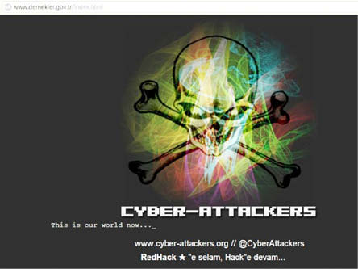
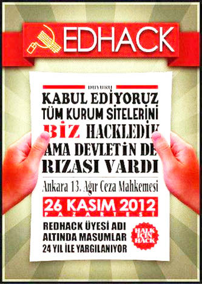

SON SÖZ
“Siber savaş” günümüzün gerçeği. Sanal âlemin ceberut devlet organizasyonları, bilgi mafyaları, kartelleri “internet” ortamını da parsellemiş, “bilgi”yi birbirlerine ve halka karşı kullanmak için tanksız, topsuz bir harekât yapıyor.
Bu savaşta da “az gelişmiş” ülkeler ligindeyiz biz. Şifrelerini 1-2-3-4-5 diye belirleyen güvenlik kuvvetlerimiz var. Gizli belgelerini yastık altında sakladığı ortaya çıkan Genelkurmayımız var. Belgelerine hâkim olamayan YÖK’ümüz var. Bu savaştan habersiz Ulaştırma, Denizcilik ve Haberleşme Bakanlığımız var, hackerlar ile “seviyeli bir ilişki” sürdüren TÜBİTAK’ımız var. İnternet ortamımız NATO’ya, ABD’ye, CIA’ya açık ama halka kapalı.
Çünkü teknoloji üreten bir ülke değil, alan ve tüketen bir ülkeyiz. Teknolojiyi aldığımız ülkelerin bıraktığı “arka kapılar”dan habersiziz.
Buna karşın dünyanın en eski “hacker” gruplarından biri de bu ülkenin topraklarında boy vermiş durumda. Redhack 1996’dan bu yana faaliyette. Sol kökenli bir grup Redhack, kendi deyişlerine göre “bileşenleri” farklı sol “pratiklerden” geliyor. Neredeyse 20 yıl önce, internetin daha yeni yeni kullanıldığı bir ülkede, bu ortamı “halk yararına” kullanmak ve “hak yiyeni hack etmek” için örgütlenmişler.
Haliyle, Redhack “arka kapılarına” hâkim olmayan devletimiz için “ulusal bir tehlike…” Devletin mahremine klavye uzatıyor çünkü; halkından sakladığı bilgileri bulup sahibine iade ediyor.
Kapıldıkları dehşet o kadar büyük ki, koca devletin özel yetkili mahkemesi bu hacker grubunu “silahlı terör örgütü” ilan etmeye kalktı. Silah dedikleri ne? Bir bilgisayar…
Sonra, çaresiz kalınca, bir bilgisayarı bile olmayan çocukları “Redhackçi” diye alıp cezaevlerine kapattı.
Âlem sanal ama mücadele gerçek. Artık sadece “siber savaş” yok, bir de yanı başında gelişen “siber direniş” var. Üstelik bu direniş bütün yeryüzüne yayılmış durumda.
“1950’lerin teknobeyni ve üç parçalı psikolojik yapınızla hiçbir kırıcının gözlerinin arkasında neler olduğunu anlamaya çalıştınız mı? Onu bu kadar sert yapan neydi diye merak ettiniz mi? Hangi güçler onu şekillendirdi, onu böylesine bir kalıba ne döktü? Ben bir Hackerım, dünyama girin” diyor The Mentor, “Hacker-Manifesto”da.
Bu çağrı, onları “Lanet olası veletler” olarak gören sistemin sahipleri kadar, bu sistemin güttüğü kalabalıklaradır.
Evet diğer çocuklardan fazla zekiler, bu yüzden öğretmeye çalıştığınız saçmalıklara inanmaması. Onlara bir kesiri beş kez anlatmanıza gerek yok. Problem çözmek için ödev yapmalarına gerek yok. Zihninden çözdüğü problemler karşısında “Lanet olası velet. Muhtemelen kopya çekmiştir” diye düşünerek büyük bir hata yapıyorsunuz!
İzleyin The Mentor’u:
“Elektronların ve elektronik düğmelerin dünyası, bilgi aktarım hızının güzelliğini. Fırsatçı oburlar tarafından yönetilmeseydi sudan ucuz olacak servisleri, zaten var olan bir sistemi, bedava kullandığımız için bizleri suçlu diye itham ediyorsunuz. Keşfediyoruz... Ve siz bize suçlu dediniz. Bilginin peşinden gidiyoruz... Ve siz bize suçlu dediniz. Bizler derimizin rengi olmadan var olduk, milliyetsiz, hiçbir dine ait olmadan...
Ve siz bize suçlu dediniz. Atom bombası ürettiniz, savaşlara girdiniz, cinayet işlediniz, hile yaptınız ve bize yalan söylediniz ve bunların bizim yararımıza olduğuna inanmamızı sağlamaya çalıştınız ve biz hala suçluyuz. Evet, ben bir suçluyum. Benim suçum merak etmek. Suçum insanları ne söyledikleri ve düşündükleri için yargılamak, nasıl göründüklerine göre değil. Suçum sizden daha akıllı olmam ki beni hiçbir zaman affetmeyeceksiniz. Ben bir hacker’ım ve bu benim manifestom. Bu bireyi durdurabilirsiniz fakat hepimizi durduramazsınız.
Hepsinden öte, hepimiz birbirimizin aynısıyız.”
Evet, hackerlar “suçlu” çocuklar; atom bombası üretmedikleri, bilgilerini efendileri için kullanmadıkları, cinayet işlemedikleri, yalan söylemedikleri, itaat etmedikleri için!
Redhack de bizim suçlularımız. Gezi Direnişi, Redhack için yeni bir “level” anlamına geldi. Çarşı ile birlikte direnişin en önemli sembollerinden biri oldu.
Redhack şimdi ülkenin en popüler sol örgütlenmesi. Birçok kişi internet üzerinden Redhack’e nasıl katılabileceğini soruyor araştırıyor. Bu soruyu 7 Ağustos’ta katıldıkları bir TV söyleşisinde şöyle yanıtladı Redhack sözcüsü:
‘‘Büyük kumandanlardan büyük devrimcilerden bir tanesi -Che üstad- şöyle demişti; “Dünyanın herhangi bir yerinde bir haksızlığa şahit olduğunuzda eğer kaşlarınızı çatıyorsanız, yumruklarınızı sıkıyorsanız siz benim yoldaşımsınız.” Bir haksızlığa, bir zulme vicdanınızla ses verebiliyorsanız siz benim yoldaşımsınız. Siz gerçekten inandıklarınızı korkmadan değil korka korka olsa da söyleyebiliyorsanız benim yoldaşımsınız. Bizim de bunun üstüne ilave edecek çok fazla bir şeyimiz yok ki. Ne ölümden korkmak ayıp, ne de düşünmek ölümü demişti Nazım usta. Korkuyor olabilirsiniz, çekiniyor olabilirsiniz. Redhack olarak sevgili dostlardan, bu saate kadar sabredenlerden, diğerlerine bu sohbetten bahsedecek olanlardan bir ricamız vardır; bir parça daha fazla direnç, bilinç. Bakın parmak uçlarımızda bizim çok farklı şeyler dolanıyor her gün; banka hesapları, kredi kartları, bir dolu şey dolanıyor. Ama biz selpak mendil satıp burnunu koluna silen çocuklarız. Tenezzül etmedik, etmiyoruz. Çıkıp bir dolu yakıştırma yapıyorlar, diyor ki “Fas’tan yazıyor.” Bir tanesi diyor ki “Fransa besliyor abi bunları”, bir tanesi İngiltere diyor, bir tanesi başka bir şey söylüyor. İngiliz ajanısınız siz diyor. E dayanamayıp söylüyorsun; petibör bisküviyle, Fransız bisküvisiyle beslenen İngiliz ajanı mı olur? Bizim de faturalarımız var, bizim de yokluklarımız var, kıtlıklarımız ve mesuliyetlerimiz var. Bütün bunların içerisinde bir mücadele verirken, eğer insanların aydınlık yarınlarına bizim de çorbada bir parça tuzumuz varsa biz bununla gurur duyarız, onur duyarız.’’
İşte, size bir “siber suç” ve “siber suçlu” profili. Bu çocuklar kendi meşrebince direndikleri için hepimize biraz uzak, biraz yavan, biraz etkisiz, biraz anlaşılmaz geliyor. İyi de önemli bir kısmımız için bu sanal âlem de biraz böyle değil mi?
“Lanet olası çocuk. Devlet hattını yine meşgul ediyor. Hepsi birbirinin aynı. Kıçınıza bahse girersiniz ki hepimiz birbirimizin aynısıyız...”
v




